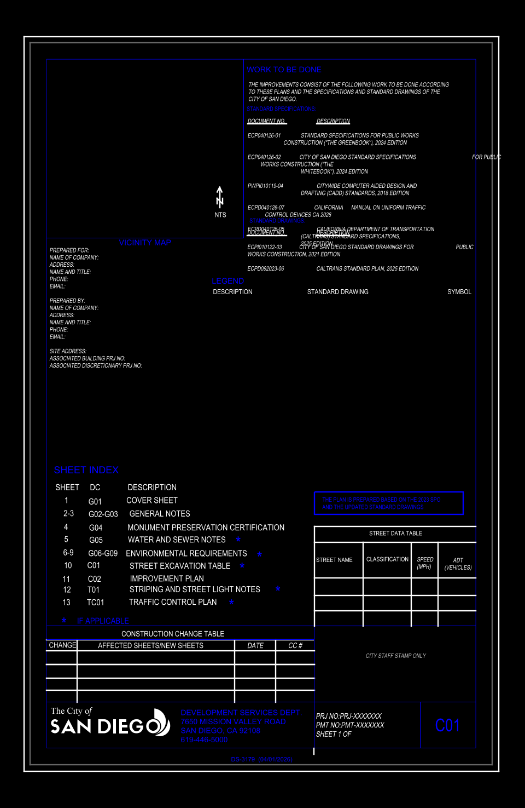

BENXIANG EVIDENCE · CITY OF SAN DIEGO DS-3179
这次不是一堆英文：原始 CAD 与验真证据同屏
左边直接渲染官方 DXF 的 Model Space 并展开块参照；右边是本象从同一源文件恢复的对象、关系与语义。
① 官方 DXF 完整原图渲染

可见完整图框、Vicinity Map 区、Sheet Index、施工变更表、Street Data Table 与官方图签。不是 AI 生图，不是人工重画。
② 对象级验真摘要
187稳定对象
319语义关系
inch头部单位
10/10机器约束通过
9Sheet Index
7引用标准
读懂了什么
DXF 版本与单位；图层、handle 与块结构；页索引；引用标准；图签待填写字段；对象之间的来源与派生关系。
源文件 SHA-256E29069D53AFF93278C5495F60D7B6324F52884CD5249A01B2FF7C073C9D6E1BA
可认证
AI 辅助流水线读懂了这份官方 CAD 模板中可验证的结构与语义，重要结论可回到源对象。
不可扩写
不等于通过 AHJ 法规审查，不替代建筑师、工程师或 PE 的专业判断与签章。